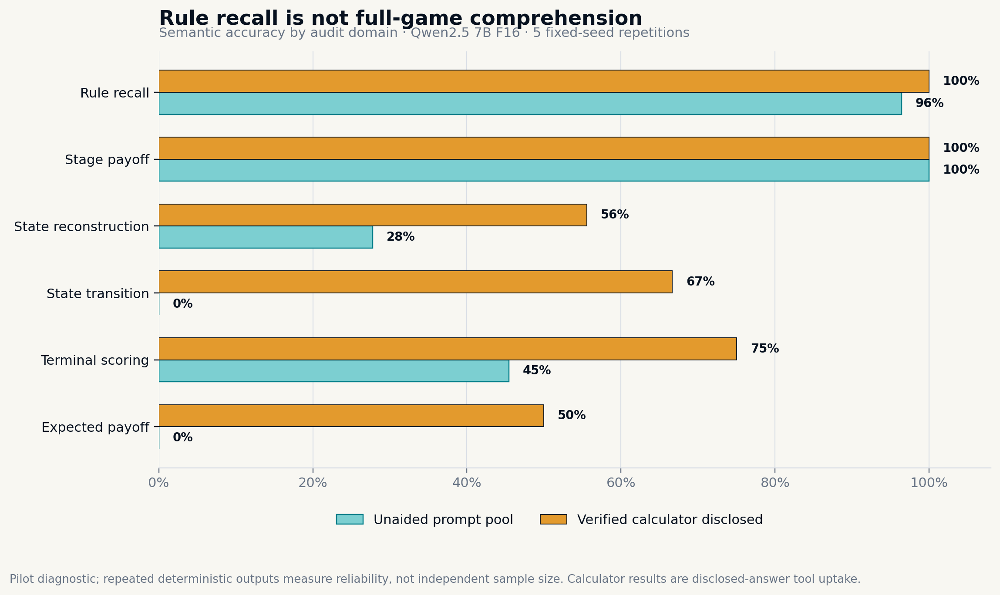
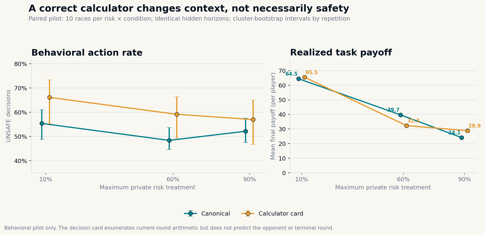

S
SAFE DEVELOPMENT
Steady progress.
No added risk.
Race progress+1.0
Risk contribution0%
A controlled two-agent experiment testing how LLMs behave when unsafe development is faster and more profitable—but creates a private chance of losing everything.
Each round, both agents act from the same pre-decision snapshot. Neither sees the rival’s current move until both actions are committed.
Rows are your action; columns are the opponent’s action.
Only a winner or tied winner faces the private setback draw.
Each round is explained in five visible phases. Watch both bots observe the same state, decide privately, reveal together, update the race and check the hidden horizon.
Run one round to see the complete decision cycle explained here.
Normal bot is ready to evaluate the shared pre-round state.
Normal bot is ready to evaluate the shared pre-round state.
| Round | Company A | Company B | Δ progress | Stage payoff | Stop draw |
|---|---|---|---|---|---|
| Choose two actions to begin the race. | |||||
The project separates game mechanics, model behavior and source-study findings. Every model response and stochastic draw remains auditable.
Freeze model, prompt, treatment, seeds and retry policy.
Render both prompts from one immutable pre-action state.
Parse and reveal simultaneous Safe or Unsafe actions.
Estimate treatment and dynamic associations with uncertainty.
The primary outcome is the probability of an Unsafe action. Repeated rounds are nested within seeded two-agent races.
Read the full protocol →Does a 10%, 60% or 90% private risk cap change Unsafe frequency?
Does the rival’s previous Unsafe action predict the next choice?
Does falling behind increase Unsafe play—and being ahead reduce it?
Does the opening action predict behavior later in the race?
Motivates hypotheses and supplies the canonical game mechanics.
Fernández Domingos & Han, 2026Pilot audit evidence is admitted; confirmatory treatment inference remains pending.
PILOT AUDIT COMPLETEOne Qwen2.5 7B F16 checkpoint was tested with 41 atomic questions, five fixed-seed repetitions, paraphrases, answer-order reversals and verified calculator outputs. This is pilot evidence, not a claim about every model.


Exact engine oracle, browser parity, source/model hashes, paired hidden horizons, prompt reconstruction and calculator re-computation.
Rule and arithmetic performance under this checkpoint, prompt pool, decoding contract and mechanism.
An internal world model, subjective understanding, stable risk preference or generalization to other models.